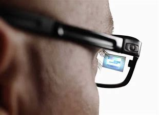

Le futur est là ! Je vous présente les lunettes connectées (aussi appelées lunettes intelligentes). Celles-ci vous assisterons dans votre quotidien en vous présentant les informations dont vous avez besoins directement sous vos yeux à l'aide de ses capteurs externes integrés.
Les informations affichées peuvent être controlées à l'aide d'un pavé tactile,de votre smartphone ou même de votre voix. Les lunettes connectées agissent comme un "petit" smartphone, vous pouvez envoyer des messages ou passer des appels par exemple et tout cela en ayant les mains libres.
Meilleure efficacité
Capable d'enregistrer
Mains libres
s'affiche devant votre oeil
Très peu encombrant
Doit être rechargé
Fragile
Un "accessoire" à un prix assez conséquent
Ne corrige pas la vue ce qui est un pas en arrière
L'enregistrement pose plusieurs problème quant au droit à l'image
Il existe des lunettes connectées plus spécifique et donc plus efficaces dans leurs tâches. Par exemple les lunettes ici ont spécialement été conçues pour vous assister lors de votre routine sportive. Elle peut, par exemple, vous donner votre pouls, votre temps, etc... Un peu comme une montre connectée mais directement sur vos yeux.
Ces lunettes connectées sont certes très utiles mais pas indispensable. De plus elles feront doublon avec vos autres appareils connectées comme votre montre par exemple. Enfin, leur utilité aurait été largement augmentée si elle pouvait corriger la vue, mais malheuresement le futur a du retard sur le présent.